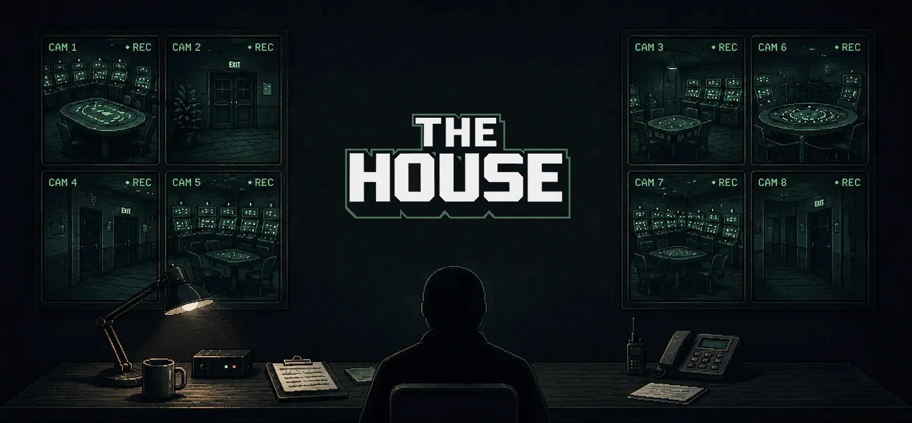
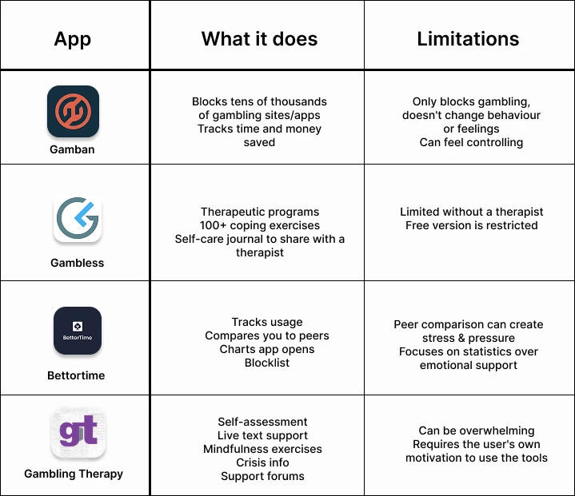
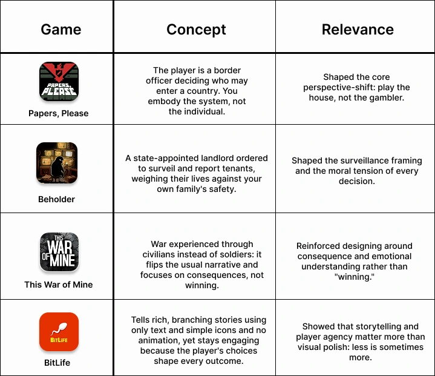
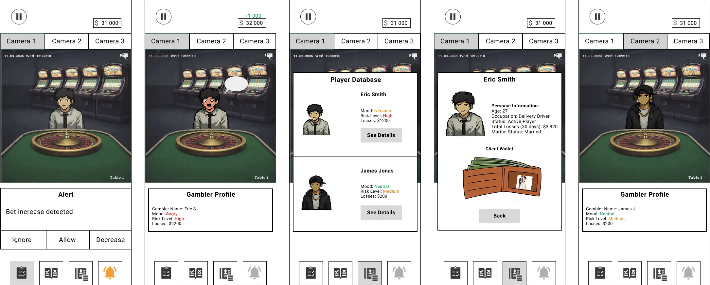
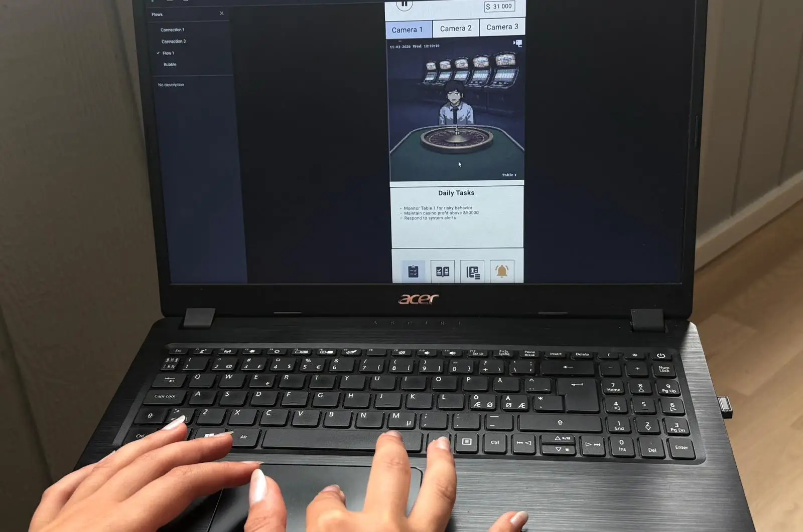
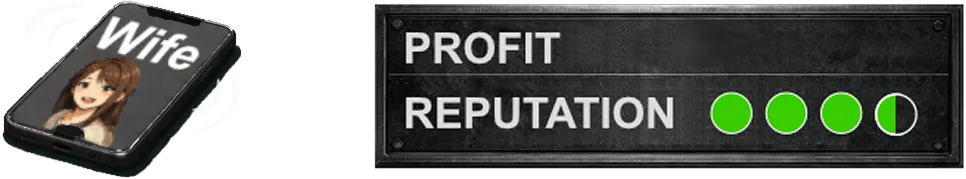
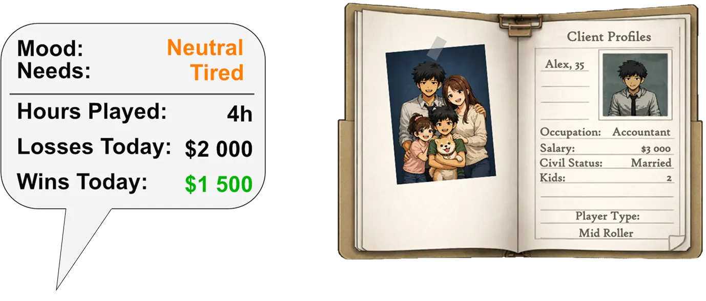
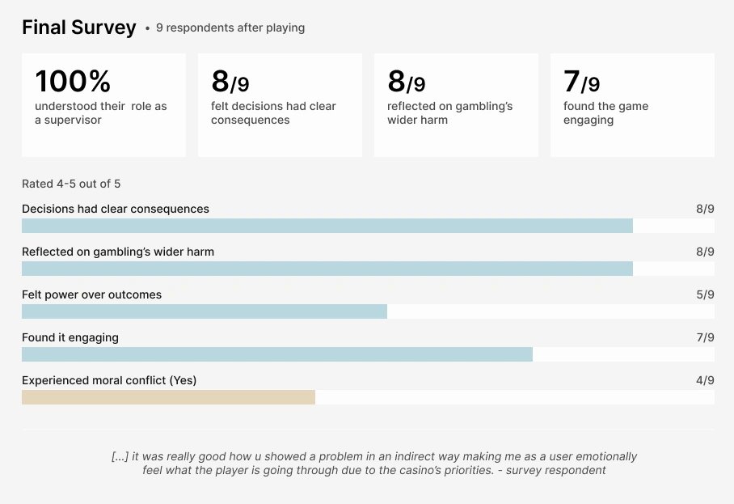

Existing tools against gambling addiction all target the same person: the one who's already addicted. Nobody exposes the system and the mechanisms that make problematic gambling possible in the first place. That was the gap.
This game flips the perspective. Instead of warning the player, The House makes them the supervisor. The player monitors gamblers, makes decisions, and keeps profit up. Every decision forces a choice: to protect the gambler, or protect the casino's profit. You rarely get both.
The main goal of this project is to raise awareness of gambling harm and how it can affect the gambler along with loved ones around them. This project uses discursive design: design made to provoke thought and spark reflection rather than to sell or solve. Instead of informing players about gambling, The House lets them experience the system from the inside and reach their own conclusions.
Research began with the problem itself: which age groups are most vulnerable to gambling, and why. Studies pointed to two main drivers, a lack of financial knowledge and the desire to win money. This led to the project's core goal: to make visible how the house always wins more than the gamblers.
A competitive analysis then mapped existing digital tools aimed at people with gambling problems. It revealed that the market was already full of tools built to support or prevent addiction, but all of them targeted the individual who was already addicted. The gap: no engaging tool existed to make the problem visible and critique it, in order to build awareness among young adults before addiction takes hold.
Alongside the market research, a set of discursive and narrative games shaped the game's approach. Each informed a specific design decision from the perspective shift, to the moral weight of every choice, to the idea that storytelling and player agency matter more than visual polish.
Below are the competitive analysis mapping the market gap (left), and the design references that shaped the approach (right):


Together, this research reframed the entire project and produced the design question:
How can a reflective game raise awareness of problematic gambling among young adults by showing the problem from the house's perspective?
Low-fi work started on paper, quick hand sketches and physical wireframes to explore the layout and core idea fast, before committing anything to screen. From there, a first low-fidelity sketch in Figma tested the central idea: placing the player in the role of casino supervisor instead of gambler. The goal was to see whether the perspective shift was clear, and whether the game's basic logic communicated without explanation.
The concept was understood, but it clearly needed a storyline, supporting information, and clearer UI elements to stand on its own. Throughout development, new features were first mocked up in Figma (using screenshots from GDevelop) and tested before being fully built, keeping iteration fast and cheap.
Below is the low-fidelity Figma prototype that served as the base for constant testing before the high-fidelity prototype was built:

Six users tested different parts of the game through observation and the think-aloud method. Testing covered four areas:
Key Findings:
Below is an image of one of the users testing the low-fi prototype:

The first version had only basic interactions: camera switching, simple alerts, a profit box. Testing showed the game needed more depth, a clearer player role, and consequences shown in parallel with the player's choices. This drove the most important features in the final game:
Together, these make the system visible from the inside, the player doesn't get told how gambling addiction is enabled. They cause it.
These features are shown below:


Final testing showed the perspective shift communicated clearly, and that players understood the harm because they caused it and not because they were told about it. A reflective game can build awareness of problematic gambling by letting the player enact what the system usually hides. Players found the atmosphere convincingly real and could clearly see the problem with gambling, the critique came through.
Swipe through the final game screens below:
Sound: Audio is core to the experience. AI-generated music, ambient casino noise, TV static and glitches, and the ring of the phone all build the heavy, unsettling atmosphere testers described firsthand. The game is designed to be played with sound on since much of its emotional weight lives there.
To document whether the final prototype answered the design question, 9 players completed a short survey after playing.
The results pointed to a clear pattern: the core concept landed. Every player understood their role as the supervisor (9/9), and the two outcomes that matter most for a discursive game came through strongly as most players felt their decisions had clear consequences, and reflected on how gambling affects people beyond the casino.
Key results:
The survey results are shown below:

This project taught me that designing critique as an experience is a constant balance, engaging enough to play, uncomfortable enough to provoke reflection. Whether that awareness is enough to actually shift attitudes toward gambling is the open question worth exploring next.
The next step is turning the prototype into a full, playable game. Testing pointed to room for more depth and gameplay parameters as a standalone experience, and that's the direction this is headed.
The idea is also open to collaboration, anyone interested in building it out further is welcome to reach out.
My university final project, awarded the highest grade (VG).